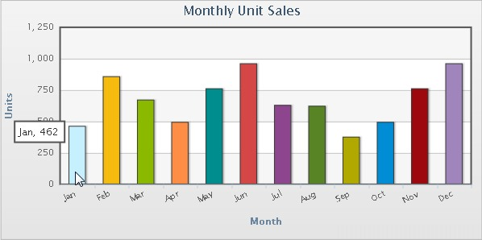
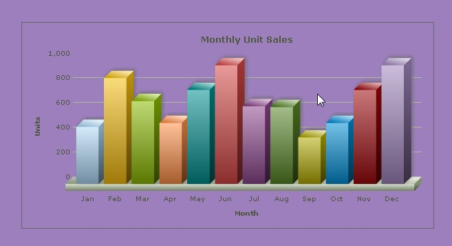

FusionCharts can effectively be used with ASP to plot dynamic data-driven charts.
Even when used with ASP, FusionCharts internally uses JavaScript and XML/jSON to render the charts. The ASP code actually helps you output this JavaScript and XML/JSON. To aid your understanding of this section, we would recommend you to go through the following sections of documentation (if you've not already read them):
- Creating your first chart
- changing chart type and size
- Configuring chart background, canvas, fonts, captions, data plot, labels, values, axis, legend, padding & margins and number formatting
- Using XML or JSON as data source
- Using JavaScript API of FusionCharts
- Creating drill-down charts and LinkedCharts
- Exporting charts as images or CSV
- How FusionCharts work?
In this section, we'll show a few basic examples to help you get started.
We'll cover the following examples here:
- Use FusionCharts in ASP with a pre-built Data.xml (which contains data to plot)
- Change the above chart into a single-page-chart using Data String method
- Use HTML Embedding method to render the chart
- Create pure JavaScript based charts
- Use JSON data to create chart
- Create multiple charts in a single page
- Create transparent chart
- Set managed printing for Mozilla browsers
Let's quickly see each of them.
Before you proceed with the contents in this page, we strictly recommend you to please go through the section How FusionCharts works?
All code discussed here is present in Download Package > Code > ASP > BasicExample folder.
In our code, we've used the charts and JavaScript class files contained in Download Package > Code > FusionCharts folder. When you run your samples, you need to make sure that the SWF files are in proper location.
Let's now get to building our first example. In this example, we'll create a "Monthly Unit Sales" chart using dataUrl method. For a start, we'll hard code our XML data in a physical XML document Data.xml and then utilize it in our chart contained in an ASP Page (SimpleChart.asp). The chart would look like the image shown below:

Let's first have a look at the XML Data document:
<chart caption='Monthly Unit Sales' xAxisName='Month' yAxisName='Units' showValues='0' formatNumberScale='0' showBorder='1'> <set label='Jan' value='462' /> <set label='Feb' value='857' /> <set label='Mar' value='671' /> <set label='Apr' value='494' /> <set label='May' value='761' /> <set label='Jun' value='960' /> <set label='Jul' value='629' /> <set label='Aug' value='622' /> <set label='Sep' value='376' /> <set label='Oct' value='494' /> <set label='Nov' value='761' /> <set label='Dec' value='960' /> </chart>
This XML is stored as Data.xml in Data Folder under BasicExample folder. It basically contains the data to create a single series chart to show "Monthly Unit Sales". We'll plot this on a Column 3D Chart. Let's see how to do that.
To plot a Chart that consumes this data, you need to include the HTML + JavaScript code to embed a chart object and then provide the requisite parameters. To make things simpler for you, we've put all this functionality in an ASP function named as renderChart(). This function is contained in Download Package > Code > ASP > Includes > FusionCharts.asp file. So, whenever you need to work with FusionCharts in ASP, just include this file in your page and then you can work with FusionCharts very easily.
Let's see it in example. SimpleChart.asp contains the following code to render the chart:
<% 'We've included ../Includes/FusionCharts.asp, which contains functions 'to help us easily embed the charts. %> <!-- #INCLUDE FILE="../Includes/FusionCharts.asp" --> <HTML> <HEAD> <% 'You need to include the following JS file, if you intend to embed the chart using JavaScript. 'When you make your own charts, make sure that the path to this JS file is correct. Else, you 'would get JavaScript errors. %> <SCRIPT LANGUAGE="Javascript" SRC="../../FusionCharts/FusionCharts.js"></SCRIPT> <TITLE>FusionCharts - Simple Column 3D Chart</TITLE> </HEAD> <BODY> <% 'Create the chart - Column 3D Chart with data from Data/Data.xml Call renderChart("../../FusionCharts/Column3D.swf", "Data/Data.xml", "", "myFirst", 600, 300, false, true) %> </BODY> </HTML>
As you can see above, we've :
- First included FusionCharts.asp to help us easily create charts.
- Also added FusionCharts.js that helps in generating the chart, handle events and provide advanced features like JavaScript fallback etc.
- After that, we've simply invoked the renderChart function to render the chart. To this function, you can pass the following parameters (in same order):
| Parameter | Description |
| chartSWF | SWF File Name (and Path) of the chart which you intend to plot. Here, we are plotting a Column 3D chart. So, we've specified it as ../../FusionCharts/Column3D.swf |
| dataUrl | If you intend to use Data Url method for the chart, pass the Url as this parameter. Else, set it to "" (in case of data String method). In this case, we're using Data.xml file, so we specify Data/Data.xml |
| dataStr | If you intend to use Data String method for this chart, pass the XML/JSON data String as this parameter. Else, set it to "" (in case of Data Url method). Since, in this above case, we're using dataURL method, we specify this parameter as "". |
| chartId | Id for the chart, using which it will be recognized in the HTML page. Each chart on the page needs to have a unique Id. |
| chartWidth | Intended width for the chart (in pixels or in percent) e.g., "400" or "100%". |
| chartHeight | Intended height for the chart (in pixels or in percent) e.g., "400" or "100%". |
| debugMode | Whether to start the chart in debug mode. Please see Debugging your Charts section for more details on Debug Mode. |
| registerWithJS | Whether to register the chart with JavaScript. This options is deprecated and kept for backward compatibility reasons. The value set is always true. This parameter is not available in renderChartHTML() function. |
When you now run this page, you'll see a chart like the one below.
If you do not see a chart like the one below, please follow the steps listed in Debugging your Charts > Basic Troubleshooting section of this documentation.
| Function | Parameter | What it does? |
| renderChart() | see above | Returns a string containing HTML+JavaScript that renders a chart. |
| renderChartHTML() | see above | Returns a string containing HTML that renders a chart. This function is deprecated. |
| SetTransparentChart() | True or False | When True is passed, this function makes the chart ready to create can with transparent background. This work together with bgAlpha attribute of chart which needs to be set to a value lower than 100. |
| FC_SetDataFormat() | "xml" or "json" | Sets the data format for the data-source of the chart. The data-source is set through dataStr or dataUrl parameter of renderChart or renderChartHTML. Default value is xml. When you set the value to json you need to pass JSON Url or JSON String through dataUrl or dataStr parameter. You need to call this function each time before you call renderChart or renderChartHTML function. |
| FC_SetRenderer() | "flash" or "javascript" | Sets the renderer-engine of FusionCharts. It can be flash (default value). When you set the value to javascript, you can force-set javascript renderer. You need to call this function each time before you call renderChart function. This setting is not applicable while using renderChartHTML function. |
| FC_EnablePrintManager() | This functions helps you enable managed print feature of FusionCharts for Mozilla- browsers. It returns a <script> tag . You need to write the string in your page.You need to call this only once in a page. | |
| FC_SetWindowMode() | "window" or "transparent" or "opaque" | Sets window mode of a chart. By default, chart renders in "opaque" mode. You can set to it "window" if you required. You need to call this function each time before you call renderChart or renderChartHTML function. |
So, you just saw how simple it is to create a chart using ASP and FusionCharts. Let's now convert the above chart to use data String method.
To convert this chart to use data string method, we create another page dataXML.asp in the same folder with following code:
<% 'We've included ../Includes/FusionCharts.asp, which contains functions 'to help us easily embed the charts. %> <!-- #INCLUDE FILE="../Includes/FusionCharts.asp" --> <HTML> <HEAD> <% 'You need to include the following JS file, if you intend to embed the chart using JavaScript. 'When you make your own charts, make sure that the path to this JS file is correct. Else, you 'would get JavaScript errors. %> <SCRIPT LANGUAGE="Javascript" SRC="../../FusionCharts/FusionCharts.js"></SCRIPT> <TITLE>FusionCharts - Simple Column 3D Chart using dataStr method</TITLE> </HEAD> <BODY> <% 'Create an XML data document in a string variable strXML = "<chart caption='Monthly Unit Sales' xAxisName='Month' yAxisName='Units' showValues='0' formatNumberScale='0' showBorder='1'>" strXML = strXML & "<set label='Jan' value='462' />" strXML = strXML & "<set label='Feb' value='857' />" strXML = strXML & "<set label='Mar' value='671' />" strXML = strXML & "<set label='Apr' value='494' />" strXML = strXML & "<set label='May' value='761' />" strXML = strXML & "<set label='Jun' value='960' />" strXML = strXML & "<set label='Jul' value='629' />" strXML = strXML & "<set label='Aug' value='622' />" strXML = strXML & "<set label='Sep' value='376' />" strXML = strXML & "<set label='Oct' value='494' />" strXML = strXML & "<set label='Nov' value='761' />" strXML = strXML & "<set label='Dec' value='960' />" strXML = strXML & "</chart>" 'Create the chart - Column 3D Chart with data from strXML variable using dataStr method Call renderChart("../../FusionCharts/Column3D.swf", "", strXML, "myNext", 600, 300, false, true) %> </BODY> </HTML>
As you can see above, we:
- Include FusionCharts.asp file to render charts easily
- Included FusionCharts.js file
- Create the XML data document in an ASP variable strXML using string concatenation. Here, we're hard-coding the data. In your applications, you can build this data dynamically after interacting with databases or external sources of data
- Finally, create the chart and set the dataStr parameter as strXML. We leave dataUrl parameter blank.
When you see this chart, you'll get the same results as before.
You can also create charts using HTML embedding method. It creates HTML <object>/<embed> tags to render chart. It does not require FusionCharts.js to be included in the page.
HTML embedding method is deprecated. Many of the features of FusionCharts that works in collaboration with JavaScript, like providing JSON data, advanced event-handing, setting chart attribute etc., won't work using this method.
Again, to make things simpler for you, we've provided an ASP function called renderChartHTML() which helps you render chart using <object>/<embed> tag and you don't have to get your hands dirty with HTML tags. This function is also contained in the previously used FusionCharts.asp file.
Let's now quickly put up a sample to show the use of this function. We make a copy of our SimpleChart.asp ( which rendered chart using dataUrl method from Data.xml file ) file and rename it to BasicChart.asp. We load the data from our previously created Data.xml file. The modification involves a single line change from the previous file and the modified code (modification in bold) would look like the following :
<% 'We've included ../Includes/FusionCharts.asp, which contains functions 'to help us easily embed the charts. %> <!-- #INCLUDE FILE="../Includes/FusionCharts.asp" --> <HTML> ... <% 'Create the chart - Column 3D Chart with data from Data/Data.xml Call renderChartHTML("../../FusionCharts/Column3D.swf", "Data/Data.xml", "", "myFirst", 600, 300, true) %> </BODY> </HTML>
As you can see above, we've:
- Included FusionCharts.asp file.
- Created the chart using renderChartHTML() method.
The renderChartHTML() method takes in the same parameters as renderChart()function.
The above example shows how you can load data using dataUrl method. You can always use dataStr method to pass XML as string using renderChartHTML() method.
FusionCharts allows you to create pure JavaScript-only charts that does not require Flash, hence enabling your chart in browsers where Flash is not supported like that of iPhone/iPad etc. This is achieve by calling FC_SetRenderer function in ASP before you render your chart. Using this function you need to set the current chart renderer to javascript.
The code snippet below shows how you can achieve this:
FC_SetRenderer( "javascript" )
...
Call renderChart("../../FusionCharts/Column2D.swf", "Data/Data.xml", "", "chart1", 600, 300, false, true)
The above code will create pure-JavaScript based FusionCharts as shown in the image below:

You can provide chart data in JSON format. You need to call FC_SetDataFormat function and set the data format to 'json' through it. Once done, you can pass the JSON data through renderChart function. If you need to pass JSON data contained in an Url, use dataUrl parameter. If you have JSON as string, use dataStr parameter. The code snippets below illustrates how you can do these:
'Set chart data format to json FC_SetDataFormat("json") 'Create the chart - Column 3D Chart with data from Data/Data.json Call renderChart("../../FusionCharts/Column3D.swf", "Data/Data.json", "", "myFirst", 600, 300, false, true)or 'Set chart data format to json FC_SetDataFormat("json") 'Create the chart - Column 3D Chart with data from strJSON variable using dataStr method Call renderChart("../../FusionCharts/Column3D.swf", "", strJSON, "myNext", 600, 300, false, true)
FusionCharts needs JSON to be passed in a specific format. Please read FusionCharts Data Formats > JSON section for more on this.
Please note that JSON data format is not supported in renderChartHTML function as JSON is interpreted by FusionCharts.js, which is not used in HTML embedding mode.
Creating multiple charts in a page is as easy as creating a single chart. The code below shows how you can call renderChart function and create as many charts as you wish. All you need to take care is that you should set unique chart id to each chart as highlighted in bold below:
'Create the chart - Column 3D Chart with data from Data/Data.xml
echo renderChart("../../FusionCharts/Column3D.swf", "Data/Data.xml", "", "chart1", 600, 300, false, true)
'Now, create a Column 2D Chart
Call renderChart("../../FusionCharts/Column2D.swf", "Data/Data.xml", "", "chart2", 600, 300, false, true)
'Now, create a Line 2D Chart
Call renderChart("../../FusionCharts/Line.swf", "Data/Data.xml", "", "chart3", 600, 300, false, true)
You can create charts with transparent backgrounds. This makes the chart show to what lies below it in HTML. To do this you need to follow these steps:
- In the chart's XML data, set <chart ... bgAlpha='0,0' ..>
- Call SetTransparentChart() and pass True
Below is a sample code with a chart having transparent background :
<% 'We've included ../Includes/FusionCharts.asp, which contains functions 'to help us easily embed the charts. <!-- #INCLUDE FILE="../Includes/FusionCharts.asp" --> %> <HTML> <HEAD> <SCRIPT LANGUAGE="Javascript" SRC="../../FusionCharts/FusionCharts.js"></SCRIPT> </HEAD> <BODY> <div style="padding:40px; background-color:#9d7fbd; border:1px solid #745C92; width: 600px;"> <% strXML = "<chart bgAlpha='0,0' canvasBgAlpha='0' caption='Monthly Unit Sales' xAxisName='Month' yAxisName='Units'>" strXML = strXML & "<set label='Jan' value='462' />" strXML = strXML & "<set label='Feb' value='857' />" strXML = strXML & "<set label='Mar' value='671' />" strXML = strXML & "<set label='Apr' value='494' />" strXML = strXML & "<set label='May' value='761' />" strXML = strXML & "<set label='Jun' value='960' />" strXML = strXML & "<set label='Jul' value='629' />" strXML = strXML & "<set label='Aug' value='622' />" strXML = strXML & "<set label='Sep' value='376' />" strXML = strXML & "<set label='Oct' value='494' />" strXML = strXML & "<set label='Nov' value='761' />" strXML = strXML & "<set label='Dec' value='960' />" strXML = strXML & "</chart>" Call SetTransparentChart(True) Call renderChart("../../FusionCharts/Column3D.swf", "", strXML, "myFirst", 600, 300, false ) %> </div> </BODY> </HTML>
In the code above we have :
- Created a DIV with purple background -background-color:#9d7fbd;
- We build a string XML for chart setting attributes bgAlpha='0,0' and canvasBgAlpha='0'
- Call SetTransparentChart() and pass True
- We rendered the chart inside the purple DIV
The chart would look as shown below. The purple color of the DIV below the chart is visible through the body of the transparent chart.

Since v3.2, FusionCharts provides better-print feature for all Mozilla/WebKit/Gecko based browsers like Firefox, Safari etc. To enable this feature in ASP all you need to do is call FC_EnablePrintManager() function once in your page(preferably at the beginning or end). This will enable the print manager process print data from all the charts in a page and prepare the charts for better-quality printing. To read more on how print manager works please go thorough this.
The code below shows how you need to enable print manager through ASP:
Call FC_EnablePrintManager(true)
...
'Render chart
Call renderChart("../../FusionCharts/Column3D.swf", "Data/Data.xml", "", "chart1", 600, 300, false, true)
Listening to Print Manager status using JavaScript
Print Manager takes a bit of time to prepare all charts present in a page for print. You can listen to Print Manager's Ready State event using FusionCharts JavaScript class. Once the charts are ready, which can be tracked by listening to an event raised by the Print Manager, you can use browser's File → Print menu, JavaScript's native window.print() function or Print Manager's advanced function - managedPrint(). The JavaScript code below shows how you can listen to the event and prepare for print:
<html>
...
<body>
<script type="text/javascript"><!--
FusionCharts.addEventListener (
FusionChartsEvents.PrintReadyStateChange ,
function (identifier, parameter) {
if(parameter.ready){
alert("Chart is now ready for printing.");
document.getElementById('printButton').disabled = false;
}
});
// --></script>
<input type="button" onclick="FusionCharts.printManager.managedPrint()"
value="Managed Print" disabled="disabled" id="printButton" >
...
</body>
</html>
In the above code we :
- Added a JavaScript event-listener for the global event PrintReadyStateChange to the global JavaScript object - FusionCharts
- Added a "Managed Print" button which will call FusionCharts.printManager.managedPrint(). The button is disabled when loaded.
- When the event is fired, it provides the listener with event arguments. The parameters event argument contains a property ready. This returns true when the Print Manager is ready to print all charts in a page
- Hence, in this event we can show an information alert and also enable the button, which was disabled prior to this.
Now, if you try printing from File → Print menu or using a button or function that call window.print() function. You can also click "Managed Print" button to print the chart.
- Once a chart is rendered it silently gathers all the image data of the present state of the chart
- It converts the image data into image using canvas HTML object
- It hides the canvas image below the chart
- When print is invoked, a parallel CSS based print media layout (using @media print ) is created
- In this print media layout the Flash based chart is hidden and the canvas image is displayed
- This layout with the canvas image is sent to the printer for print